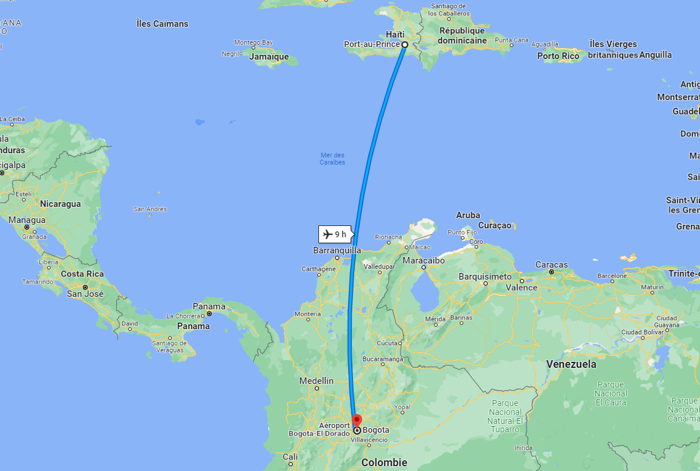

Aide aux migrants haïtiens en Colombie
La Colombie apporte une assistance aux Haïtiens en transit qui se trouvent à Necoclí. Les autorités colombiennes, en collaboration avec des organisations internationales et des ONG, fournissent des services d'aide humanitaire, tels que l'hébergement temporaire, la nourriture, les soins médicaux et d'autres besoins essentiels. Des efforts sont également déployés pour faciliter l'enregistrement des migrants et leur fournir des informations sur leurs droits et leurs options disponibles.
Pour obtenir des informations supplémentaires sur les droits des migrants, les Haïtiens en transit peuvent consulter la page https://www.oas.org/es/sadye/documentos/FUPAD_CartillaDerechos.pdf. Ce document fournit une cartilla informative sur les droits des migrants et peut les aider à comprendre leurs droits et les ressources disponibles pour eux en Colombie.
De plus, le site https://www.r4v.info/es/colombia propose des informations et des ressources spécifiques pour les migrants en Colombie. Il fournit des informations sur les services d'assistance, les procédures d'enregistrement et les options de soutien disponibles pour les migrants.
La Colombie s'efforce de soutenir les Haïtiens en transit à Necoclí en leur fournissant une assistance humanitaire et en les informant sur leurs droits et les ressources disponibles.
Les relations bilatérales entre l'Haïti et la Colombie
Le désir de la Colombie de maintenir un niveau élevé de relations bilatérales a conduit à la formulation d'engagements importants de coopération envers Haïti, qui se sont renforcés ces dernières années, notamment en raison du séisme qui a dévasté le pays en janvier 2010 et des efforts de l'ONU et de toute la communauté internationale pour mobiliser des ressources, de l'argent et du personnel de soutien de toutes les nations amies en faveur d'Haïti, non seulement pour les efforts de reconstruction, mais aussi pour permettre le rétablissement de la démocratie dans cette nation caribéenne. Avant le séisme qui a ravagé Haïti en janvier 2010, la Colombie participait à plusieurs projets et avait une présence policière dans la MINUSTAH (Mission des Nations Unies pour la stabilisation en Haïti). Depuis le séisme de 2010, la Colombie a envoyé d'importantes quantités d'aide humanitaire, de navires, d'experts et d'infrastructures en Haïti, afin de contribuer aux efforts de reconstruction.
Conditions de voyage
- Les titulaires d'un passeport haïtien doivent obtenir un visa de catégorie V/Tourisme pour entrer en Colombie. Pour en savoir plus sur les procédures et les exigences relatives à ce visa, vous pouvez consulter le site web du ministère des affaires étrangères https://www.cancilleria.gov.co/v/turismo.
- Compléter le formulaire le formulaire Check-Mig de Migración Colombia entre 72 heures et 1 jour avant la fermeture de votre vol.
- A l’arrivée en Colombie,le formulaire d’entrée sur le territoire n’est à remplir que si le voyageur dispose de biens à déclarer.
- Pour les denrées alimentaires, il est possible de transporter dans la limite de 6kg : charcuteries, fromages, viandes cuites et préparations à base de viande cuites, qui doivent être hermétiquement fermées (par exemple sous vide) et ne pas présenter de risques sanitaires particuliers.
Comment aller depuis Port-au-Prince à Bogotá ?
Pour vous allez depuis Port-au-Prince à Bogotá en avion, voici quelques-unes des compagnies aériennes qui opèrent des vols entre les deux destinations :



Interdictions
Lorsque vous effectuez des livraisons en Colombie, il est important de connaître certaines interdictions et réglementations afin de respecter les lois du pays. Voici quelques interdictions courantes auxquelles un livreur en Colombie doit se conformer :
Drogues illégales
Il est strictement interdit de transporter ou de livrer des drogues illicites en Colombie. Le pays applique des lois très strictes en matière de drogue, et toute implication dans le trafic de drogue peut entraîner des sanctions sévères, y compris des peines de prison.
Armes à feu et munitions
Le transport ou la livraison d'armes à feu et de munitions nécessite des autorisations spéciales en Colombie. Il est important de respecter les réglementations en vigueur et d'obtenir les permis nécessaires avant de transporter de telles marchandises.
Produits contrefaits
La vente, le transport ou la livraison de produits contrefaits est illégale en Colombie. Il est important de veiller à ne pas transporter de marchandises contrefaites, car cela peut entraîner des poursuites judiciaires.
Espèces protégées
Il est interdit de transporter ou de livrer des espèces protégées en Colombie, y compris des animaux, des plantes ou des produits dérivés provenant de ces espèces. Cela inclut également les produits en ivoire, les peaux d'animaux exotiques, etc.
Il est essentiel de se conformer à toutes les lois et réglementations en vigueur en Colombie lors de la réalisation de livraisons. Il est recommandé de se renseigner auprès des autorités compétentes ou de consulter un expert en logistique pour obtenir des informations précises et à jour sur les restrictions et les interdictions spécifiques applicables aux livraisons en Colombie.